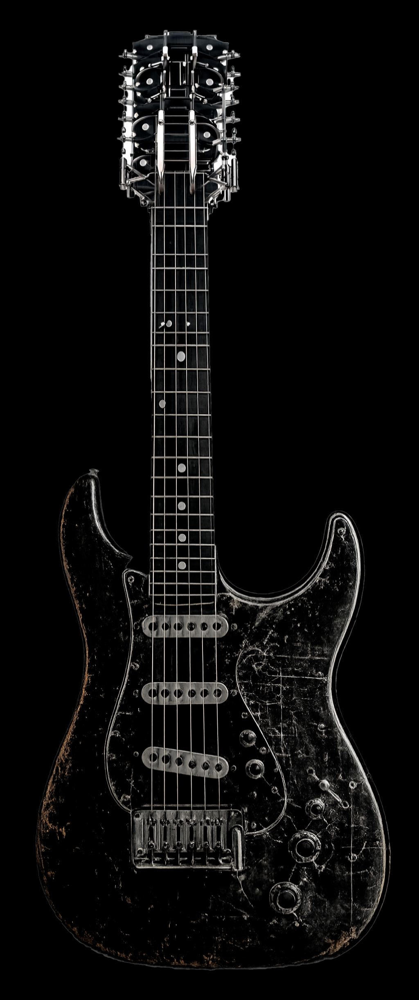

Forjá tu propia guitarra eléctrica desde cero. Con tus manos. Con tu idea.
No hacemos guitarras en serie.
Forjamos la tuya.
En un mundo de instrumentos clonados, cada pieza que sale de este taller es irrepetible: pensada con vos, tallada a mano y afinada a tu manera de tocar. Quedate si buscás un sonido que nadie más pueda tener.
Cada traste nivelado a mano, cada veta elegida por su sonido. Sin líneas de montaje, sin atajos.
Solo 12 instrumentos al año. Escasez real por la capacidad del taller, no una táctica de venta.
Madera viva y bobinado manual de pastillas: tu tono no existe en ningún catálogo del mundo.
Cada elección transforma la pieza. El precio se actualiza en tiempo real.
Dexteridad
Cuerdas y escala
Madera del cuerpo
Madera del mástil
Trastes
Solo se abren 12 slots anuales. Esta es la realidad del oficio, no una táctica de marketing.
Solo 3 slots disponibles para 2026. El depósito del 20% asegura tu posición en la lista de producción.
Un árbol que creció durante décadas en condiciones adversas desarrolla una densidad de fibra que ningún proceso industrial puede replicar. El luthier de autor sabe leerlo.
Cada pieza pasa por un mínimo de 18 meses de secado natural antes de ser trabajada. El tiempo es el primer instrumento del taller.
La elección de la madera define el 60% del carácter tonal del instrumento. El otro 40% lo forja el músico que lo toca.
Toca los puntos rojos para explorar cada componente. Ingeniería al servicio del arte.

Nivel y coronado manual con piedra de agua japonesa. Tolerancia de ±0.01mm. Disponibles en níquel-plata o acero inoxidable 18%.
Tallada a mano desde hueso bovino de alta densidad. Cada ranura calibrada al diámetro exacto de las cuerdas elegidas.
Devanado artesanal con tensión de hilo controlada. Cada bobina produce un carácter sonoro único, no reproducible industrialmente.
Barra de acero de doble acción que permite ajustar la curvatura del mástil en ambas direcciones. Incluye calibración gratuita de por vida.
Mecanizado en bloque de aluminio aeronáutico o latón macizo. Silletas individualmente ajustables para intonación perfecta por cuerda.
"Tres años de gira con este instrumento. Humedad extrema en Brasil, frío en Islandia. Ni una desafinación estructural. Es una obra de ingeniería."
"El nivel de los trastes es quirúrgico. Cero ruido fantasma. Los técnicos de estudio preguntan qué guitarra es cuando escuchan el raw track."
"Encargué la versión de 7 cuerdas fanned frets para mi proyecto progresivo. La tensión entre cuerdas es perfectamente equilibrada. Te obliga a tocar mejor."
"El proceso de personalización fue transparente desde el primer depósito hasta la entrega. Seis meses de espera que valieron exactamente lo que prometieron."
Desde la selección de la madera hasta la calibración final. Sin atajos.
Sesión de 2 horas con el luthier para definir especificaciones técnicas, ergonomía y estética. Planos digitales aprobados antes de tocar la madera.
Elección personal del luthier de las piezas del stock con humedad medida. Corte CNC de alta precisión de cuerpo y mástil.
Encolado con adhesivos de temperatura controlada, instalación del alma, incrustación de trastes y trabajo de cejilla.
Lijado progresivo de grano 80 a 2000. Aplicación de acabado en capas con 72h de curado entre capas.
Instalación y bobinado manual de pastillas. Soldadura de plata con materiales de audiophile grade.
Nivelado de trastes, ajuste de acción, intonación por cuerda, prueba de resonancia con analizador espectral. El instrumento sale listo para grabar.
Precios cerrados. Sin costos ocultos. Sin sorpresas en el checkout.
El instrumento llega en perfectas condiciones. La calibración se mantiene de por vida.
Estuche rígido de alta densidad con espuma de polietileno de celda cerrada. Resistente a impactos, humedad y variaciones térmicas de hasta 35°C.
Ajuste anual gratuito de acción, intonación y curvatura del mástil. Disponible para instrumentos Artisan y Master Reserve.
Sensor de humedad incluido en el estuche para monitoring continuo. Rango óptimo de conservación 45–55% HR garantizado.
Despacho con seguro a valor declarado completo. Embalaje de doble caja con absorbentes de impacto. Tracking en tiempo real.
Al confirmar el slot de producción se realiza un depósito del 20% del precio total. El 80% restante se abona en dos cuotas: 40% a mitad del proceso y 40% final al aprobar el instrumento terminado. El depósito es reembolsable al 100% si el luthier no puede cumplir con el slot comprometido.
El proceso completo toma entre 4 y 5 meses desde la apertura del slot. El cliente recibe actualizaciones fotográficas en cada fase con acceso a un panel de seguimiento privado.
Sí, durante las primeras 2 semanas posteriores al depósito es posible modificar sin costo adicional. Una vez iniciado el corte de madera, los cambios estructurales tienen un cargo según el alcance. Los cambios de hardware o electrónica pueden hacerse hasta la semana 10.
Sí, enviamos a todo el mundo. El costo de envío con seguro a valor declarado completo se calcula según el destino y se añade al presupuesto de forma transparente antes del depósito. Tiempos estimados: 7 a 14 días hábiles.
Incluye: ajuste de curvatura de mástil, ajuste de acción en cejilla y puente, intonación por cuerda y revisión de electrónica. Disponible para instrumentos Artisan Series y Master Reserve. Una vez al año, envío de retorno cubierto por el taller.
Sí. La cancelación es posible en cualquier momento. Antes del inicio de corte de madera se reembolsa el 100% del depósito. Durante la fabricación, el reembolso es proporcional a las horas ya trabajadas. El proceso de cancelación está disponible desde el panel de cliente con un solo clic.